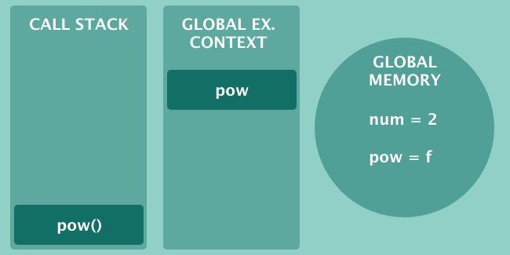
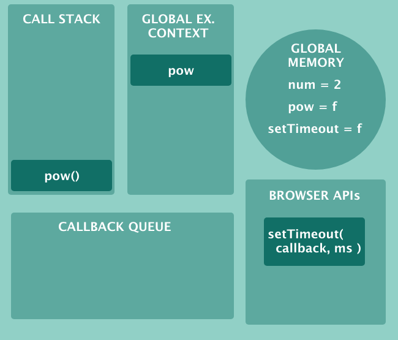
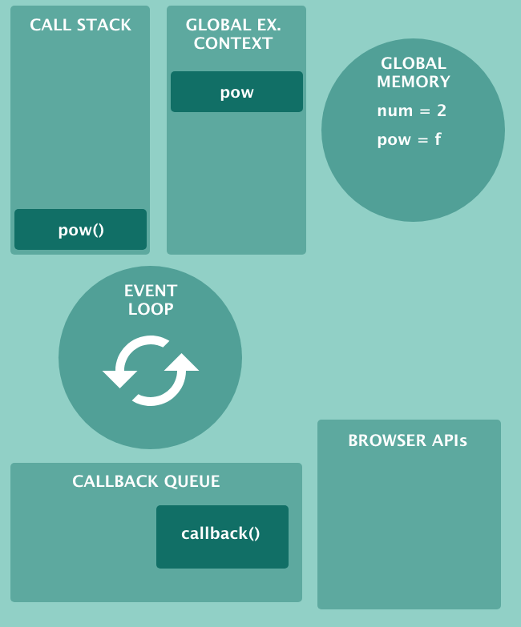

原文连接:https://www.cnblogs.com/fundebug/p/javascript-from-callback-to-promise.html
摘要： 理解 JS 引擎运行原理。
- 作者：前端小智
- 原文：JS引擎:它们是如何工作的?从调用堆栈到Promise，需要知道的所有内容
Fundebug经授权转载，版权归原作者所有。
为了保证可读性，本文采用意译而非直译。
想阅读更多优质文章请猛戳GitHub博客,一年百来篇优质文章等着你！
有没有想过浏览器如何读取和运行JS代码？ 这看起来很神奇，我们可以通过浏览器提供的控制台来了解背后的一些原理。
在Chrome中打开浏览器控制台，然后查看Sources这栏，在右侧可以到一个 Call Stack 盒子。
JS 引擎是一个可以编译和解释我们的JS代码强大的组件。 最受欢迎的JS 引擎是V8，由 Google Chrome 和 Node.j s使用，SpiderMonkey 用于Firefox，以及Safari/WebKit使用的 JavaScriptCore。
虽然现在 JS 引擎不是帮我们处理全面的工作。但是每个引擎中都有一些较小的组件为我们做繁琐的的工作。
其中一个组件是调用堆栈(Call Stack)，与全局内存和执行上下文一起运行我们的代码。
Js 引擎和全局内存(Global Memory)
JavaScript 是编译语言同时也是解释语言。信不信由你，JS 引擎在执行代码之前只需要几微秒就能编译代码。
这听起来很神奇，对吧?这种神奇的功能称为JIT(及时编译)。这个是一个很大的话题，一本书都不足以描述JIT是如何工作的。但现在，我们午饭可以跳过编译背后的理论，将重点放在执行阶段，尽管如此，这仍然很有趣。
考虑以下代码：
var num = 2;
function pow(num) {
return num * num;
}如果问你如何在浏览器中处理上述代码？ 你会说些什么？ 你可能会说“浏览器读取代码”或“浏览器执行代码”。
现实比这更微妙。首先，读取这段代码的不是浏览器，是JS引擎。JS引擎读取代码，一旦遇到第一行，就会将几个引用放入全局内存。
全局内存(也称为堆)JS引擎保存变量和函数声明的地方。因此，回到上面示例，当 JS引擎读取上面的代码时，全局内存中放入了两个绑定。
即使示例只有变量和函数，也要考虑你的JS代码在更大的环境中运行：在浏览器中或在Node.js中。 在这些环境中，有许多预定义的函数和变量，称为全局变量。 全球记忆将比num和pow更多。
上例中，没有执行任何操作，但是如果我们像这样运行函数会怎么样呢：
var num = 2;
function pow(num) {
return num * num;
}
pow(num);现在事情变得有趣了。当函数被调用时，JavaScript引擎会为全局执行上下文和调用栈腾出空间。
JS引擎:它们是如何工作的? 全局执行上下文和调用堆栈
刚刚了解了 JS引擎如何读取变量和函数声明，它们最终被放入了全局内存(堆)中。
但现在我们执行了一个JS函数，JS引擎必须处理它。怎么做？每个JS引擎中都有一个基本组件，叫调用堆栈。
调用堆栈是一个堆栈数据结构：这意味着元素可以从顶部进入，但如果它们上面有一些元素，它们就不能离开，JS 函数就是这样的。
一旦执行，如果其他函数仍然被阻塞，它们就不能离开调用堆栈。请注意，这个有助于你理解“JavaScript是单线程的”这句话。
回到我们的例子，当函数被调用时，JS引擎将该函数推入调用堆栈

同时，JS 引擎还分配了一个全局执行上下文，这是运行JS代码的全局环境，如下所示

想象全局执行上下文是一个海洋，其中全局函数像鱼一样游动，多美好！ 但现实远非那么简单， 如果我函数有一些嵌套变量或一个或多个内部函数怎么办？
即使是像下面这样的简单变化，JS引擎也会创建一个本地执行上下文:
var num = 2;
function pow(num) {
var fixed = 89;
return num * num;
}
pow(num);注意，我在pow函数中添加了一个名为fixed的变量。在这种情况下，pow函数中会创建一个本地执行上下文，fixed 变量被放入pow函数中的本地执行上下文中。
对于嵌套函数的每个嵌套函数，引擎都会创建更多的本地执行上下文。
JavaScript 是单线程和其他有趣的故事
JavaScript是单线程的，因为只有一个调用堆栈处理我们的函数。也就是说，如果有其他函数等待执行，函数就不能离开调用堆栈。
在处理同步代码时，这不是问题。例如，两个数字之间的和是同步的，以微秒为单位。但如果涉及异步的时候，怎么办呢?
幸运的是，默认情况下JS引擎是异步的。即使它一次执行一个函数，也有一种方法可以让外部（如：浏览器）执行速度较慢的函数，稍后探讨这个主题。
当浏览器加载某些JS代码时，JS引擎会逐行读取并执行以下步骤：
- 将变量和函数的声明放入全局内存(堆)中
- 将函数的调用放入调用堆栈
- 创建全局执行上下文，在其中执行全局函数
- 创建多个本地执行上下文(如果有内部变量或嵌套函数)
到目前为止，对JS引擎的同步机制有了基本的了解。 在接下来的部分中，讲讲 JS 异步工作原理。
异步JS，回调队列和事件循环
全局内存(堆)，执行上下文和调用堆栈解释了同步 JS 代码在浏览器中的运行方式。 然而，我们遗漏了一些东西，当有一些异步函数运行时会发生什么？
请记住，调用堆栈一次可以执行一个函数，甚至一个阻塞函数也可以直接冻结浏览器。 幸运的是JavaScript引擎是聪明的，并且在浏览器的帮助下可以解决问题。
当我们运行一个异步函数时，浏览器接受该函数并运行它。考虑如下代码：
setTimeout(callback, 10000);
function callback(){
console.log('hello timer!');
}setTimeout 大家都知道得用得很多次了，但你可能不知道它不是内置的JS函数。 也就是说，当JS 出现，语言中没有内置的setTimeout。
setTimeout浏览器API( Browser API)的一部分，它是浏览器免费提供给我们的一组方便的工具。这在实战中意味着什么?由于setTimeout是一个浏览器的一个Api，函数由浏览器直接运行(它会在调用堆栈中出现一会儿，但会立即删除)。
10秒后，浏览器接受我们传入的回调函数并将其移动到回调队列(Callback Queu)中。。考虑以下代码
var num = 2;
function pow(num) {
return num * num;
}
pow(num);
setTimeout(callback, 10000);
function callback(){
console.log('hello timer!');
}示意图如下：

如你所见，setTimeout在浏览器上下文中运行。 10秒后，计时器被触发，回调函数准备运行。 但首先它必须通过回调队列(Callback Queue)。 回调队列是一个队列数据结构，回调队列是一个有序的函数队列。
每个异步函数在被放入调用堆栈之前必须通过回调队列，但这个工作是谁做的呢，那就是事件循环(Event Loop)。
事件循环只有一个任务:它检查调用堆栈是否为空。如果回调队列中(Callback Queue)有某个函数，并且调用堆栈是空闲的，那么就将其放入调用堆栈中。
完成后，执行该函数。 以下是用于处理异步和同步代码的JS引擎的图：

想象一下，callback() 已准备好执行，当 pow() 完成时，调用堆栈(Call Stack) 为空，事件循环(Event Look) 将 callback() 放入调用堆中。大概就是这样，如果你理解了上面的插图，那么你就可以理解所有的JavaScript了。
回调地狱和 ES6 中的Promises
JS 中回调函数无处不在，它们用于同步和异步代码。 考虑如下map方法：
function mapper(element){
return element * 2;
}
[1, 2, 3, 4, 5].map(mapper);mapper是一个在map内部传递的回调函数。上面的代码是同步的，考虑异步的情况：
function runMeEvery(){
console.log('Ran!');
}
setInterval(runMeEvery, 5000);该代码是异步的，我们在setInterval中传递回调runMeEvery。回调在JS中无处不在，因此就会出现了一个问题:回调地狱。
JavaScript 中的回调地狱指的是一种编程风格，其中回调嵌套在回调函数中，而回调函数又嵌套在其他回调函数中。由于 JS 异步特性，js 程序员多年来陷入了这个陷阱。
说实话，我从来没有遇到过极端的回调金字塔，这可能是因为我重视可读代码，而且我总是坚持这个原则。如果你在遇到了回调地狱的问题，说明你的函数做得太多。
这里不会讨论回调地狱，如果你好奇，有一个网站，callbackhell.com，它更详细地探索了这个问题，并提供了一些解决方案。
我们现在要关注的是ES6的 Promises。ES6 Promises是JS语言的一个补充，旨在解决可怕的回调地狱。但什么是 Promises 呢?
JS的 Promise是未来事件的表示。 Promise 可以以成功结束：用行话说我们已经解决了resolved(fulfilled)。 但如果 Promise 出错，我们会说它处于拒绝(rejected )状态。 Promise 也有一个默认状态：每个新的 Promise 都以挂起(pending)状态开始。
创建和使用 JavaScript 的 Promises
要创建一个新的 Promise，可以通过传递回调函数来调用 Promise 构造函数。回调函数可以接受两个参数:resolve和reject。如下所示：
const myPromise = new Promise(function(resolve){
setTimeout(function(){
resolve()
}, 5000)
});如下所示，resolve是一个函数，调用它是为了使Promise 成功，别外也可以使用 reject 来表示调用失败。
const myPromise = new Promise(function(resolve, reject){
setTimeout(function(){
reject()
}, 5000)
});
注意，在第一个示例中可以省略reject，因为它是第二个参数。但是，如果打算使用reject，则不能忽略resolve，如下所示，最终将得到一个resolved 的承诺，而非 reject。
// 不能忽略 resolve !
const myPromise = new Promise(function(reject){
setTimeout(function(){
reject()
}, 5000)
});现在，Promises看起来并不那么有用，我们可以向它添加一些数据，如下所示：
const myPromise = new Promise(function(resolve) {
resolve([{ name: "Chris" }]);
});但我们仍然看不到任何数据。 要从Promise中提取数据，需要链接一个名为then的方法。 它需要一个回调来接收实际数据：
const myPromise = new Promise(function(resolve, reject) {
resolve([{ name: "Chris" }]);
});
myPromise.then(function(data) {
console.log(data);
});Promises 的错误处理
对于同步代码而言，JS 错误处理大都很简单，如下所示：
function makeAnError() {
throw Error("Sorry mate!");
}
try {
makeAnError();
} catch (error) {
console.log("Catching the error! " + error);
}将会输出：
Catching the error! Error: Sorry mate!现在尝试使用异步函数：
function makeAnError() {
throw Error("Sorry mate!");
}
try {
setTimeout(makeAnError, 5000);
} catch (error) {
console.log("Catching the error! " + error);由于setTimeout，上面的代码是异步的，看看运行会发生什么：
throw Error("Sorry mate!");
^
Error: Sorry mate!
at Timeout.makeAnError [as _onTimeout] (/home/valentino/Code/piccolo-javascript/async.js:2:9)这次的输出是不同的。错误没有通过catch块，它可以自由地在堆栈中向上传播。
那是因为try/catch仅适用于同步代码。 如果你很好奇，Node.js中的错误处理会详细解释这个问题。
幸运的是，Promise 有一种处理异步错误的方法，就像它们是同步的一样：
const myPromise = new Promise(function(resolve, reject) {
reject('Errored, sorry!');
});在上面的例子中，我们可以使用catch处理程序处理错误：
const myPromise = new Promise(function(resolve, reject) {
reject('Errored, sorry!');
});
myPromise.catch(err => console.log(err));我们也可以调用Promise.reject()来创建和拒绝一个Promise
Promise.reject({msg: 'Rejected!'}).catch(err => console.log(err));Fundebug可以自动捕获JavaScript错误，包括Promise错误，欢迎免费试用~
Promises 组合：Promise.all，Promise.allSettled， Promise.any
Promise API 提供了许多将Promise组合在一起的方法。 其中最有用的是Promise.all，它接受一个Promises数组并返回一个Promise。 如果参数中 promise 有一个失败（rejected），此实例回调失败（reject），失败原因的是第一个失败 promise 的结果。
Promise.race(iterable) 方法返回一个 promise，一旦迭代器中的某个promise解决或拒绝，返回的 promise就会解决或拒绝。
较新版本的V8也将实现两个新的组合：Promise.allSettled和Promise.any。 Promise.any仍然处于提案的早期阶段：在撰写本文时，仍然没有浏览器支持它。
Promise.any可以表明任何Promise是否fullfilled。 与 Promise.race的区别在于Promise.any不会拒绝即使其中一个Promise被拒绝。
无论如何，两者中最有趣的是 Promise.allSettled，它也是 Promise 数组，但如果其中一个Promise拒绝，它不会短路。 当你想要检查Promise数组是否全部已解决时，它是有用的，无论最终是否拒绝，可以把它想象成Promise.all 的反对者。
异步进化：从Promises 到 async/await
ECMAScript 2017 (ES8)的出现，推出了新的语法诞生了async/await。
async/await只是Promise 语法糖。它只是一种基于Promises编写异步代码的新方法， async/await 不会以任何方式改变JS，请记住，JS必须向后兼容旧浏览器，不应破坏现有代码。
来个例子：
const myPromise = new Promise(function(resolve, reject) {
resolve([{ name: "Chris" }]);
});
myPromise.then((data) => console.log(data))使用async/await, 我们可以将Promise包装在标记为async的函数中，然后等待结果的返回：
const myPromise = new Promise(function(resolve, reject) {
resolve([{ name: "Chris" }]);
});
async function getData() {
const data = await myPromise;
console.log(data);
}
getData();有趣的是，async 函数也会返回Promise，你也可以这样做：
async function getData() {
const data = await myPromise;
return data;
}
getData().then(data => console.log(data));那如何处理错误？ async/await提一个好处就是可以使用try/catch。 再看一下Promise，我们使用catch处理程序来处理错误：
const myPromise = new Promise(function(resolve, reject) {
reject('Errored, sorry!');
});
myPromise.catch(err => console.log(err));使用async函数，我们可以重构以上代码：
async function getData() {
try {
const data = await myPromise;
console.log(data);
// or return the data with return data
} catch (error) {
console.log(error);
}
}
getData();并不是每个人都喜欢这种风格。try/catch会使代码变得冗长，在使用try/catch时，还有另一个怪异的地方需要指出，如下所示：
async function getData() {
try {
if (true) {
throw Error("Catch me if you can");
}
} catch (err) {
console.log(err.message);
}
}
getData()
.then(() => console.log("I will run no matter what!"))
.catch(() => console.log("Catching err"));运行结果：
以上两个字符串都会打印。 请记住， try/catch 是一个同步构造，但我们的异步函数产生一个Promise。 他们在两条不同的轨道上行驶，比如两列火车。但他们永远不会见面， 也就是说，throw 抛出的错误永远不会触发getData()的catch方法。
实战中，我们不希望throw触then的处理程序。 一种的解决方案是从函数返回Promise.reject()：
async function getData() {
try {
if (true) {
return Promise.reject("Catch me if you can");
}
} catch (err) {
console.log(err.message);
}
}现在按预期处理错误
getData()
.then(() => console.log("I will NOT run no matter what!"))
.catch(() => console.log("Catching err"));
"Catching err" // 输出除此之外，async/await似乎是在JS中构建异步代码的最佳方式。 我们可以更好地控制错误处理，代码看起来也更清晰。
总结
JS 是一种用于Web的脚本语言，具有先编译然后由引擎解释的特性。 在最流行的JS引擎中，有谷歌Chrome和Node.js使用的V8，有Firefox构建的SpiderMonkey，以及Safari使用的JavaScriptCore。
JS引擎包含很有组件:调用堆栈、全局内存(堆)、事件循环、回调队列。所有这些组件一起工作，完美地进行了调优，以处理JS中的同步和异步代码。
JS引擎是单线程的，这意味着运行函数只有一个调用堆栈。这一限制是JS异步本质的基础:所有需要时间的操作都必须由外部实体(例如浏览器)或回调函数负责。
为了简化异步代码流，ECMAScript 2015 给我们带来了Promise。 Promise 是一个异步对象，用于表示任何异步操作的失败或成功。 但改进并没有止步于此。 在2017年，async/ await诞生了：它是Promise的一种风格弥补，使得编写异步代码成为可能，就好像它是同步的一样。
代码部署后可能存在的BUG没法实时知道，事后为了解决这些BUG，花了大量的时间进行log 调试，这边顺便给大家推荐一个好用的BUG监控工具 Fundebug。
关于Fundebug
Fundebug专注于JavaScript、微信小程序、微信小游戏、支付宝小程序、React Native、Node.js和Java线上应用实时BUG监控。 自从2016年双十一正式上线，Fundebug累计处理了10亿+错误事件，付费客户有阳光保险、核桃编程、荔枝FM、掌门1对1、微脉、青团社等众多品牌企业。欢迎大家免费体验！